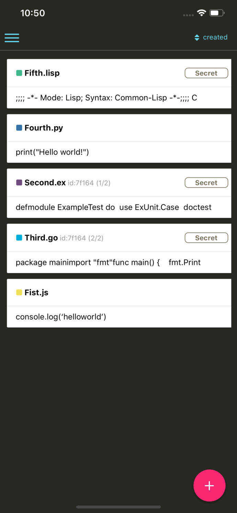
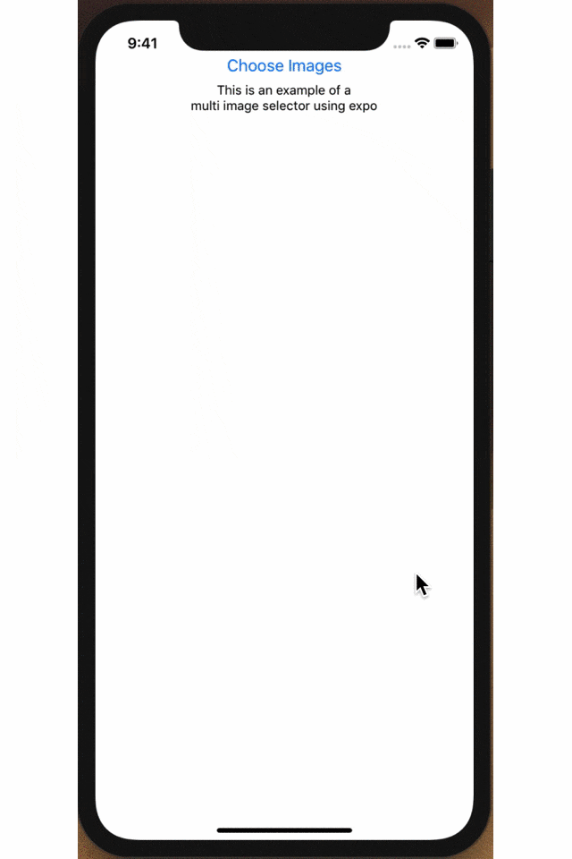
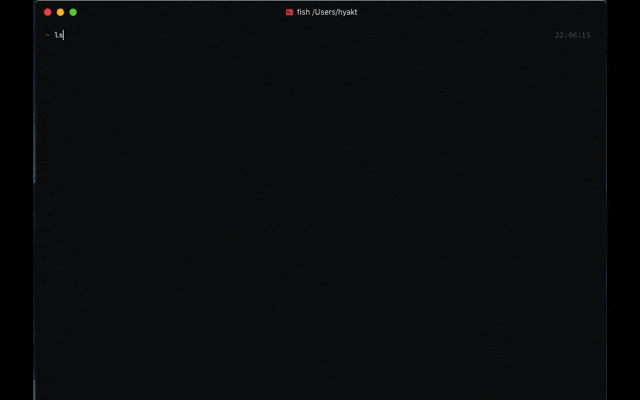
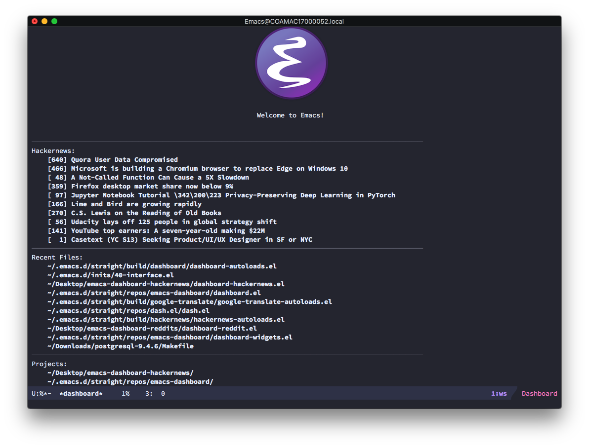
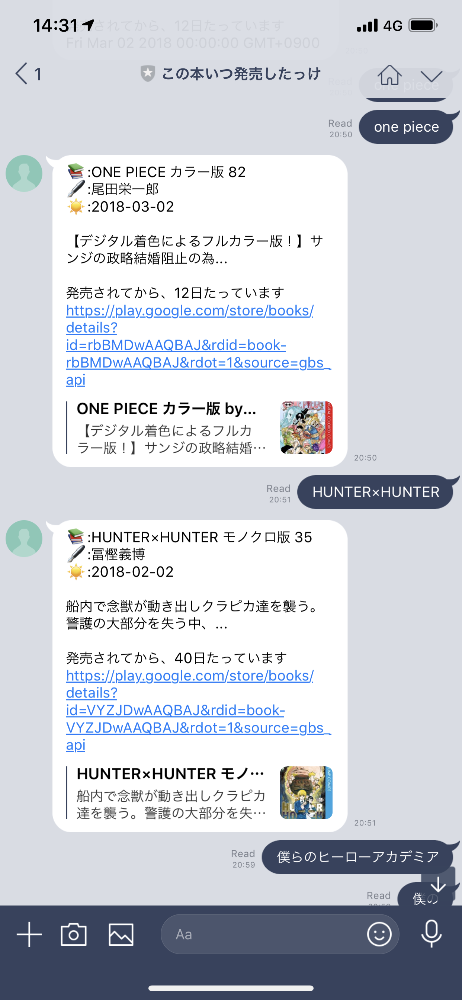
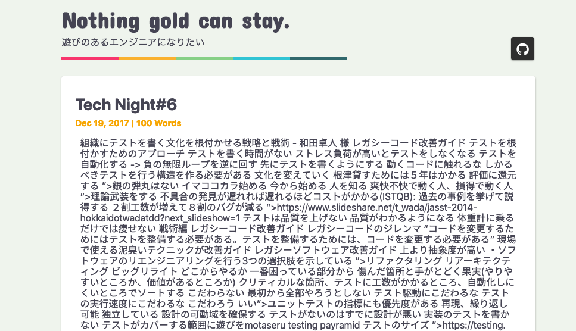
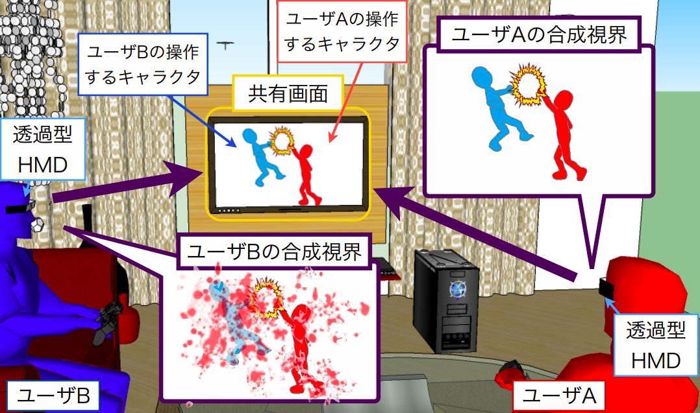
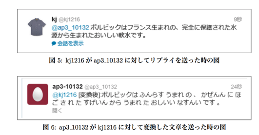

I am
東京でソフトウェアエンジニアとして働いてます
大学院ではHCIの研究をしてました(研究テーマ)
技術好きですが必要ベース派です
Product
regist (2019) product

registはGithubのGistビューワーです.
機能
- Gistの作成と編集
- Gistとの同期
- 様々な言語に対応したシンタックスハイライト
使用技術:
React Native, React Hooks, Expo, Github API, JavaScript
expo-multiple-media-imagepicker (2019) oss

ExpoのMedia Libraryを利用した画像を複数枚選択できるReactNative用packageを作成しました
Multiple image selecting package for React Native using Expo MediaLibrary.
https://github.com/hyakt/expo-multiple-media-imagepicker
使用技術:
React Native, Expo, JavaScript
luna (2019) oss

シンプルなGit表示機能付きのfish shell promptを作りました
Simple fish shell prompt forked by sol.
https://github.com/hyakt/luna
使用技術:
fish shell
emacs-dashboard-hackernews (2018) oss

Hacker Newsを表示するEmacs Dashboard用のプラグインを作成しました。
This is a plugin for the Emacs Dashboard.
Display a topstories of Hacker News on Dashboard.
https://github.com/hyakt/emacs-dashboard-hackernews
使用技術:
Emacs Lisp
この本いつ発売したっけBot (2017) product

本の最新巻がいつ発売されたか教えてくれるLineのBotを作成しました。
使用技術:
Node.js, Express, Google Books API, Now
hugo-theme-pleasure (2017) oss

ブログジェネレータHugoの明るいテーマを作成しました。
https://github.com/hyakt/hugo-theme-pleasure
使用技術:
HTML, Stylus(CSS), hugo
SHAPIO: Shape I/O Controller for Video Games (2015) research
「コントローラの形状とテレビゲーム内のアイテムの形状が一致した際に楽しさが向上する」という根拠に基づき、
ゲーム内のシチュエーションに合わせて、変形するコントローラを作成し評価しました。
ACM CHIPLAY 2015 に論文投稿しました。
A game controller that inputs and outputs game events through its three-dimensional shape.
https://dl.acm.org/citation.cfm?id=2810318
使用技術
- ハードウェア： Arduino, サーボモータ, 角度センサ, BLE
- ミドルウェア： Swift, JavaScript
- ソフトウェア（ゲーム）: Unity, C#
Enhancing Gaming Experience System Using See-Through HMD (2014) research

家庭用ゲーム機をプレイする際に、シースルー型のHMDを装着することで、
TV画面外にもエフェクトを表示し、もっと楽しくゲームをプレイできる仕組みを作りました
This system that enhances gaming experience for off-line-console gamers. This system displays common scene for all players on a shared monitor, and it displays player-specific information on each player’s see-through head-mounted display.
https://ci.nii.ac.jp/naid/110009861131/
使用技術
Unity, C#, Kinect, Python, Vuforia
入れ替えても読めちゃうBot (2013) product

Typoglycemiaという、
単語を構成する文字を並べ替えても、
最初と最後の文字が合っていれば読めてしまう仕組みを使ったTwitterのBotを作りました。
https://github.com/hyakt/CambridgeBot
使用技術:
Java, 形態素解析(MeCab), GAE(GoogleApp Engine)